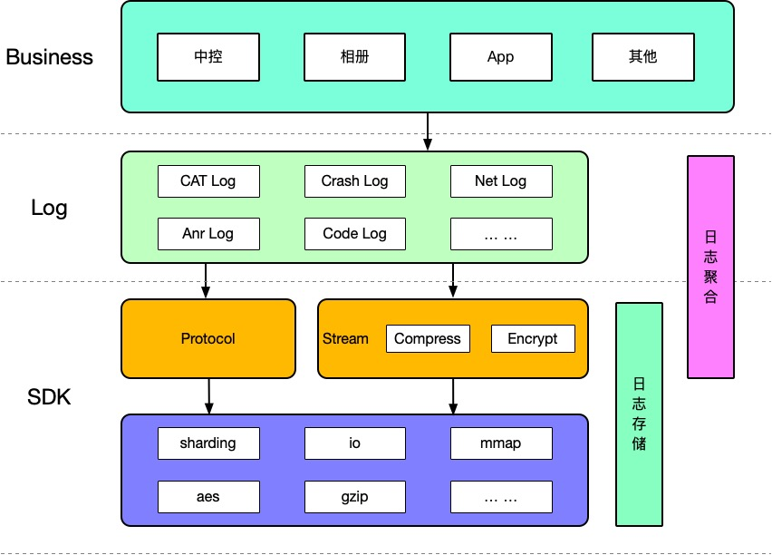

一个好的移动端日志框架是怎么炼成的
对于移动应用来说，日志库是必不可少的基础设施。线上出现问题时，往往需要回捞日志，协助排查并解决问题。
那么一个好的日志框架需要具备哪些特性呢？
- 高效性：不能影响性能，导致卡顿
- 完整性：存储传输过程中不能丢失
- 统一性：各类日志信息统一集中收集
- 安全性：不能被随意破解，防止被窥视
- 便利性：使用回捞方便、前端展示便于定位和分析
高效性
日志模块作为底层基础库，首先要保证流畅性，对上层的性能影响必须尽量小，但是日志写操作是非常频繁的，如果在 Java 中操作这些数据，非常容易发生大量的 GC，频繁的 I/O 操作也容易导致 CPU 占用过高，甚至出现 CPU 峰值，从而影响应用性能，发生卡顿现象。
数据从程序写入到磁盘的过程中，其中牵涉到两次数据拷贝：一次是用户控件拷贝到内核空间的缓存，一次是回写时内核空间的缓存到硬盘的拷贝。当发生回写时也涉及到了内核空间和用户空间频繁切换。
Java 实现最简单的方案主要性能瓶颈是出现在频繁写文件上，那是否可以先把日志缓存到内存中，当到一定大小时才进行后续操作。
内存缓存暂时能解决频繁 I/O 导致的问题，但这个方案有一个问题：丢日志。
完整性
使用内存缓存时，在杀进程、crash 的时候，容易丢失内存数据，从而导致日志的丢失。
理想情况：
当程序 crash 时，crash 捕捉模块捕捉到 crash，然后调用日志接口把内存中的日志刷新的文件中。但是在实际中程序被系统杀死不会有事件通知，而且很多异常退出（如 nativ crash），crash 捕捉模块并一定能捕捉到。而这种情况恰恰是跟进的重点，没有 crash 堆栈辅助定位，丢日志的问题在这个时候就显得尤为凸显。
mmap
mmap 是一种内存映射文件的方法，即将一个文件或者其他对象映射到进程的地址空间，使得应用程序处理映射部分如同访问主内存。

使用 mmap 几乎和直接写内存一样的性能，避免了写文件的数据拷贝，避免了内核空间和用户空间的频繁切换，而且 mmap 不会丢失日志，回写时机基本可控。
这里有个兜底操作，如果 mmap 初始化失败，会开辟一块堆空间来做日志缓存，小概率事件。
统一性
常见的日志类型有：代码级日志、网络日志、用户行为日志、崩溃日志、H5 日志等。
中控还有网关日志、libgateway 日志、SDK 日志等。
如果这些日志都上报到不同的系统，那么后期维护也比较麻烦、不好管控，分析日志也需要经常来回切换，相对孤立。
这些都是日志框架的输入层，可以统一接口，区分不同的日志类型，这样日志内容可以更加丰富、等待时机统一上报即可。

{"c":"clogan header","f":1,"l":1538034504703,"n":"log","i":1,"m":true}
| key | type | description |
|---|---|---|
| c | string | 日志内容 |
| f | int | 日志类型 |
| l | long | 时间戳 |
| n | string | 线程名称 |
| i | int | 线程id |
| m | bool | 是不是主线程 |
安全性
日志的存储必然是不允许使用明文的，往往会对数据进行压缩和加密。但是先加密再压缩还是先压缩再加密效率比较高呢？
很明显是先压缩再加密效率比较高，这样会减少 mmap 占用的内存大小， 每写一行日志日志模块就必须进行压缩和加密。
但是如果把 app 的生命周期作为一个压缩单位，如果这个压缩单位中有数据损坏，那么后面的日志也就解压不出来了。所以可以把一定大小的作为一个压缩单位，这样即使压缩单位中有部分数据损坏，并不会影响这个单位中损坏数据之前的日志解决，也不会影响其他单位中的数据解压。
流式压缩耗时本身较小，几乎不会对性能造出影响，最关键的是，多条日志同时压缩会导致 CPU 曲线短时间内极速升高，进而会导致程序卡顿，而流式压缩是把时间分散在整个生命周期内，CPU 的曲线相对更平滑。
便利性
使用接口简单
xxxxxxxxxx// 写日志Logger.w(Sting log，int type);xxxxxxxxxx// 缓存刷新到日志Logger.f();xxxxxxxxxx// 发送日志Logger.s();日志回捞主要有两种方式：
- PUSH 透传 （中控：MQTT）
- 引动用户主动上传
Push 透传的主要问题在于 APP 只有在 Push 通道建立的时候才能收到消息，中控在用户没有登录或者其他原因时，MQTT 是没有建立连接的，这个时候日志就无法回捞。
在 App 中主动调用上报接口，用户可直接上报日志，跳过了 Push 系统，可以及时回捞日志，第一时间解决问题。
线上展示
性能
内存
Java
C
Java 实现写日志，GC 频繁，C 实现则不会出现这种情况。
CPU
C 实现没有频繁的 GC，同时采用流式的压缩和加密避免了集中压缩加密可能产生的 CPU 峰值，所以 CPU 平均使用率会降低。
架构

一个好的移动端日志框架使用日志协议解决日志本地聚合存储问题，采用先压缩再加密的方式，使用流式加密压缩，避免了 CPU 峰值，同时减少了 CPU 使用。跨平台 C 库提供了日志协议数据的格式化处理，针对大日志分片处理，引入 MMAP 机制解决了日志丢失问题，使用 AES 进行日志加密确保日志安全性，并且提供了主动上报接口。核心逻辑都在 C 层完成，具备跨平台的能力，接口调用也比较简单，在解决痛点问题的同时，也大大提升了性能。
思考
从 0 到 1 完成一个真正好用，并能解决业务痛点的框架，是非常有难度的，也是一件非常有意义的事情。当然 ，一个好的框架的炼成不是一蹴而就的，是一个逐步完善演进的过程。这一过程中，肯定会遇到很多问题，如何解决问题，如果将这些问题优化到极致，可能是每个技术人长期追求的目标。